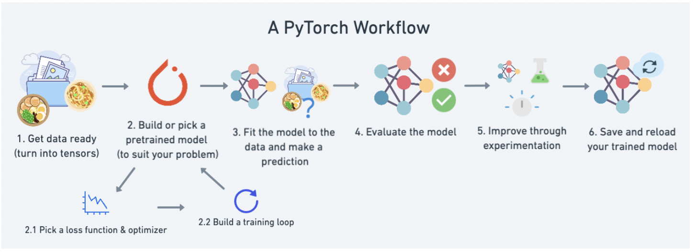
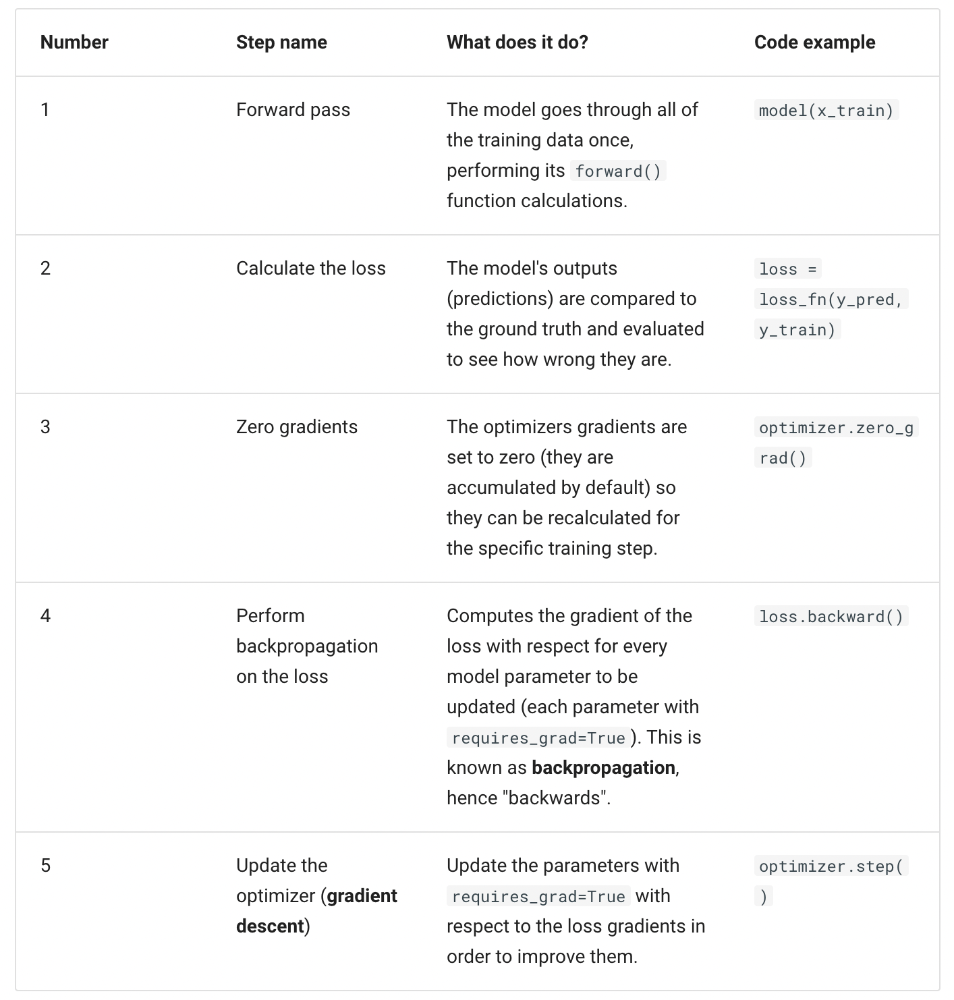
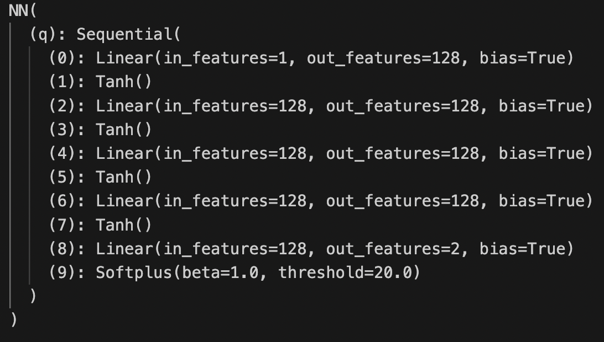
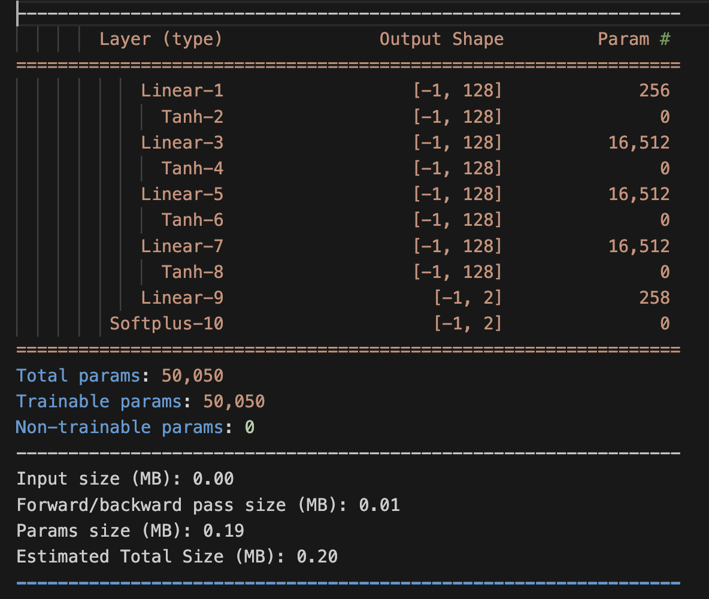
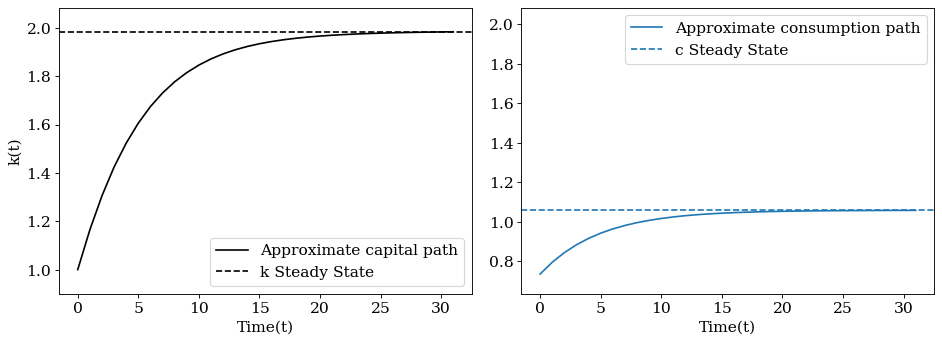

Deep Learning#
PyTorch#
PyTorch is an open source machine learning and deep learning framework for Python. In particular, Pytorch streamlines the parametrizarion and optimization of neural networks.
This website offers accessible ressources for learning how to use Pytorch to implement deep learning algorithms.
The figure below illustrates the typical Pytorch workflow, from data selction to model training.

The first step consists in splitting your data into a training and a testing set.
Then you have to build your model.
torch.nncontains different classess that let you build and train the layers of your neural network. All models in PyTorch inherit from the subclass nn.torch.optimcontains various optimization algorithms, allowing you to select the most efficient implementation of gradient descent for your problem.nn.Parametercontains the parameters of your neural network, like weights and biases.forward()tells the larger blocks of your network how to make calculations on inputs.
In order to train your model, you have to define the loss function that you wish to minmize. In practice, the loss will measures how far the predictions of your model are from the actual value stored in your testing set.
PyTorch training loop goes through the following 5 steps:

Finally, the testing loop where you evaluate your model, is typicially made of the following steps:

Approximation of Growth Model#
Acknowledgement: This notebook has been written by Mahdi E Kahou.
We now illustrate how deep learning can be applied to solve the solution of the canonical growth problem.
\(\begin{align} \quad & \max_{\{c_t\}_{t=0}^\infty } \sum \beta^t u(c_t)\\ \quad & \text{s.t.}\quad k_{t+1} = f(k_t) + (1-\delta) k_t -c_t,\\ \quad & k_{t+1} \geq 0,\\ \quad & k_0 \quad \text{is given}. \end{align}\)
The Euler equation can be written as:
\(\begin{align} \quad & u'(c_t) = \beta u'(c_{t+1})\big[f'(k_{t+1})+(1-\delta)\big]. \end{align}\)
To pin down the solution transversality condition is required:
\(\begin{align} \quad & \lim_{T\rightarrow \infty} u'(c_T)k_{T+1} = 0. \end{align}\)
The solution of this problem can be written as a root of the functional operator.
\(\begin{align} \quad & \beta u'\big(c(t+1)\big)\bigg[f'\big(k(t+1)\big)+(1-\delta)\bigg] - u'\big(c(t)\big) = 0, \\ \quad & f\big(k(t)\big) + (1-\delta) k(t) -c(t) - k(t+1) = 0,\\ \quad & k(0)-k_0 = 0. \end{align}\)
This example assumes that
\(u(c) = \frac{c^{1-\sigma}}{1-\sigma}\), and \(f(k) = k^\alpha\),
\(\sigma = 1\), \(\beta = 0.9\), \(\alpha = \frac{1}{3}\).
Load packages
Installation instructions for the d2l package and the PyTorch package.
import numpy as np
import torch
import torch.nn as nn
import torch.nn.functional as F
from torch.utils.data import Dataset, DataLoader
import matplotlib.pyplot as plt
from matplotlib import cm
import torchsummary
from d2l import torch as d2l
Define plotting setups
fontsize= 14
ticksize = 14
figsize = (12, 4.5)
params = {'font.family':'serif',
"figure.figsize":figsize,
'figure.dpi': 80,
'figure.edgecolor': 'k',
'font.size': fontsize,
'axes.labelsize': fontsize,
'axes.titlesize': fontsize,
'xtick.labelsize': ticksize,
'ytick.labelsize': ticksize
}
plt.rcParams.update(params)
Setting up the model’s parameters
class Params(d2l.HyperParameters):
def __init__(self,
alpha = 1.0/3.0,
beta = 0.9,
delta = 0.1,
k_0 = 1.0,
):
self.save_hyperparameters()
Define some useful functions:
\(f(k)\): Production function
\(f'(k)\): derivative of the production function
\(SS\): Steady states of the capital and consumption
def f(k):
alpha = Params().alpha
return k**alpha
def f_prime(k):
alpha = Params().alpha
return alpha*(k**(alpha -1))
def u_prime(c):
out = c.pow(-1)
return out
class SS: #steady state
def __init__(self):
self.delta = Params().delta
self.beta = Params().beta
self.alpha = Params().alpha
base = ((1.0/self.beta)-1.0+self.delta)/self.alpha
exponent = 1.0/(self.alpha-1)
self.k_ss = base**exponent
self.c_ss = f(self.k_ss)-self.delta*self.k_ss
Preparing grid and data loader#
class Grid_data(d2l.HyperParameters):
def __init__(self,
max_T = 32,
batch_size = 8):
self.save_hyperparameters()
self.time_range = torch.arange(0.0, self.max_T , 1.0)
self.grid = self.time_range.unsqueeze(dim = 1)
class Data_label(Dataset):
def __init__(self,data):
self.time = data
self.n_samples = self.time.shape[0]
def __getitem__(self,index):
return self.time[index]
def __len__(self):
return self.n_samples
train_data = Grid_data().grid
train_labeled = Data_label(train_data)
train = DataLoader(dataset = train_labeled, batch_size = 8 , shuffle = True )
Defining structure of neural network#
Here the the approximation function (deep neural net) is \(\hat{q}=[\hat{c},\hat{k}] : \mathbb{R} → \mathbb{R}^2\).
class NN(nn.Module, d2l.HyperParameters):
def __init__(self,
dim_hidden = 128,
layers = 4,
hidden_bias = True):
super().__init__()
self.save_hyperparameters()
torch.manual_seed(123)
module = []
module.append(nn.Linear(1,self.dim_hidden, bias = self.hidden_bias))
module.append(nn.Tanh())
for i in range(self.layers-1):
module.append(nn.Linear(self.dim_hidden,self.dim_hidden, bias = self.hidden_bias))
module.append(nn.Tanh())
module.append(nn.Linear(self.dim_hidden,2))
module.append(nn.Softplus(beta = 1.0)) #The softplus layer ensures c>0,k>0
self.q = nn.Sequential(*module)
def forward(self, x):
out = self.q(x) # first element is consumption, the second element is capital
return out
# Alternative Neural Network with ReLU activation functions
""" class NN(nn.Module, d2l.HyperParameters):
def __init__(self,
dim_hidden = 128,
layers = 4,
hidden_bias = True):
super().__init__()
self.save_hyperparameters()
torch.manual_seed(123)
module = []
module.append(nn.Linear(1,self.dim_hidden, bias = self.hidden_bias))
module.append(nn.ReLU())
for i in range(self.layers-1):
module.append(nn.Linear(self.dim_hidden,self.dim_hidden, bias = self.hidden_bias))
module.append(nn.ReLU())
module.append(nn.Linear(self.dim_hidden,2))
module.append(nn.Softplus(beta = 1.0)) #The softplus layer ensures c>0,k>0
self.q = nn.Sequential(*module)
def forward(self, x):
out = self.q(x) # first element is consumption, the second element is capital
return out """
Optimization of neural network#
Auxiliary function that extracts the learning rate:
def get_lr(optimizer):
for param_group in optimizer.param_groups:
return param_group['lr']
class Data_label(Dataset):
def __init__(self,data):
self.time = data
self.n_samples = self.time.shape[0]
def __getitem__(self,index):
return self.time[index]
def __len__(self):
return self.n_samples
Initializing the neural net and defining the optimizer.
q_hat= NN()
learning_rate = 1e-3
optimizer = torch.optim.Adam(q_hat.parameters(), lr=learning_rate)
scheduler = torch.optim.lr_scheduler.StepLR(optimizer, step_size=100, gamma=0.8)
print(q_hat)

# Torchsummary provides a more readable summary of the neural network
torchsummary.summary(q_hat, input_size=(1,))

Optimization of the network’s weights.
delta = Params().delta
beta = Params().beta
k_0 = Params().k_0
num_epochs = 1001
for epoch in range(num_epochs):
for i, time in enumerate(train):
time_zero = torch.zeros([1,1])
time_next = time+1
c_t = q_hat(time)[:,[0]]
k_t = q_hat(time)[:,[1]]
c_tp1 = q_hat(time_next)[:,[0]]
k_tp1 = q_hat(time_next)[:,[1]]
k_t0 = q_hat(time_zero)[0,1]
res_1 = c_t-f(k_t)-(1-delta)*k_t + k_tp1 #Budget constraint
res_2 = (u_prime(c_t)/u_prime(c_tp1)) - beta*(f_prime(k_tp1)+1-delta) #Euler
res_3 = k_t0-k_0 #Initial Condition
loss_1 = res_1.pow(2).mean()
loss_2 = res_2.pow(2).mean()
loss_3 = res_3.pow(2).mean()
loss = 0.1*loss_1+0.8*loss_2+0.1*loss_3
optimizer.zero_grad()
loss.backward()
optimizer.step()
scheduler.step()
if epoch == 0:
print('epoch' , ',' , 'loss' , ',', 'loss_bc' , ',' , 'loss_euler' , ',' , 'loss_initial' ,
',', 'lr_rate')
if epoch % 100 == 0:
print(epoch,',',"{:.2e}".format(loss.detach().numpy()),',',
"{:.2e}".format(loss_1.detach().numpy()) , ',' , "{:.2e}".format(loss_2.detach().numpy())
, ',' , "{:.2e}".format(loss_3.detach().numpy()), ',', "{:.2e}".format(get_lr(optimizer)) )
Plotting the results#
time_test = Grid_data().grid
c_hat_path = q_hat(time_test)[:,[0]].detach()
k_hat_path = q_hat(time_test)[:,[1]].detach()
plt.subplot(1, 2, 1)
plt.plot(time_test,k_hat_path, color='k', label = r"Approximate capital path")
plt.axhline(y=SS().k_ss, linestyle='--',color='k', label="k Steady State")
plt.ylabel(r"k(t)")
plt.xlabel(r"Time(t)")
plt.ylim([Params().k_0-0.1,SS().k_ss+0.1 ])
plt.legend(loc='best')
plt.subplot(1, 2, 2)
plt.plot(time_test,c_hat_path,label= r"Approximate consumption path")
plt.axhline(y=SS().c_ss, linestyle='--',label="c Steady State")
plt.xlabel(r"Time(t)")
plt.ylim([c_hat_path[0]-0.1,SS().k_ss+0.1 ])
plt.tight_layout()
plt.legend(loc='best')
plt.tight_layout()
plt.show()
